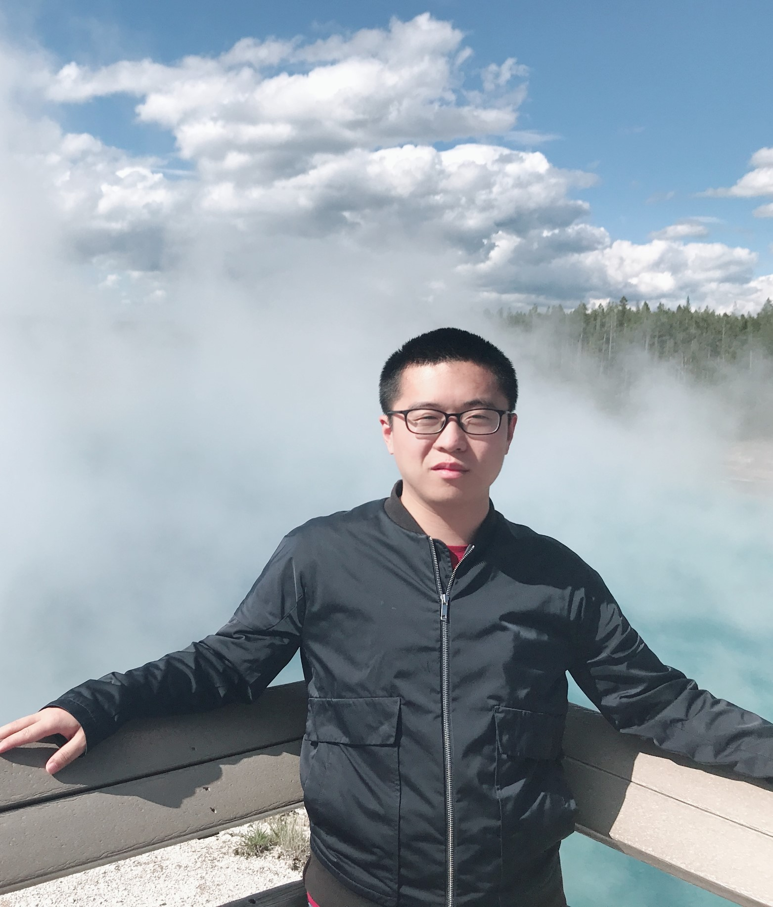
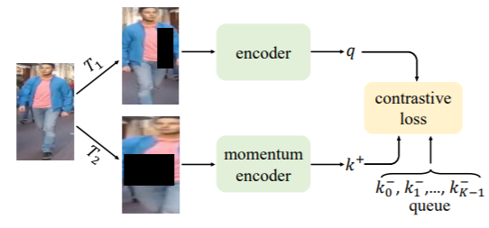
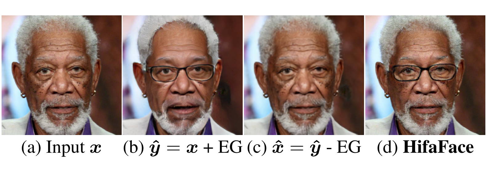
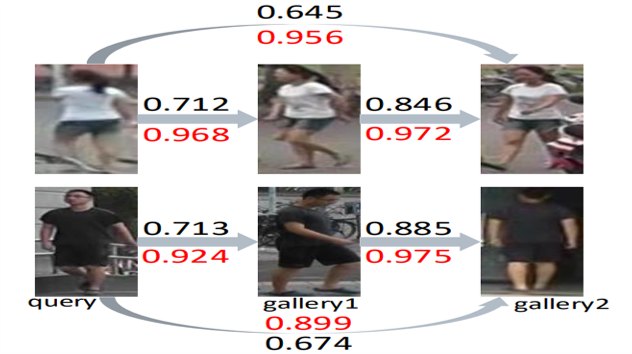
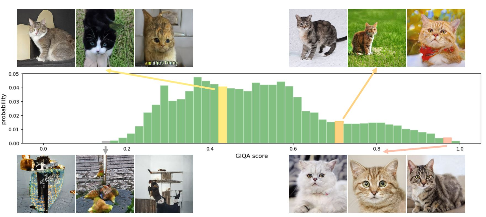
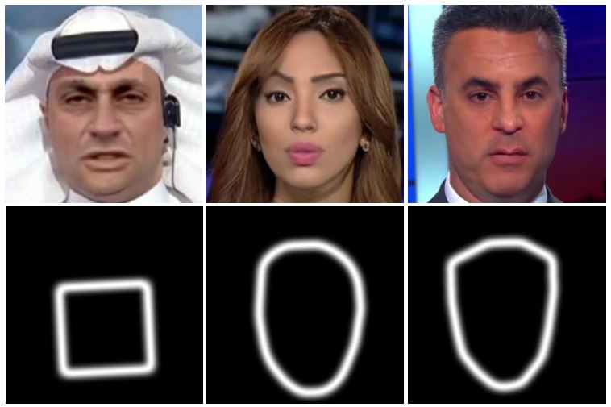
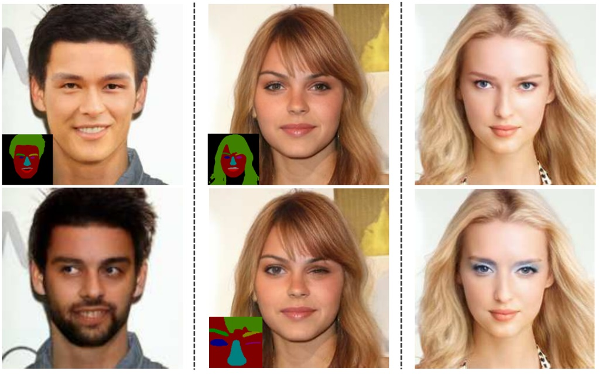
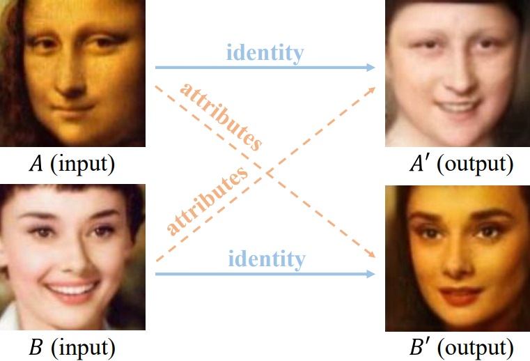
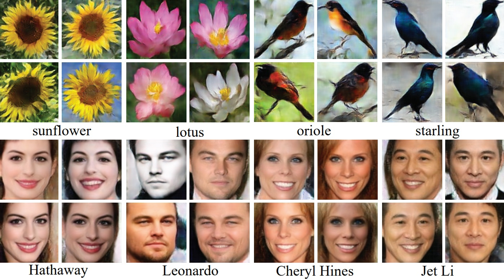

|  |
Jianmin Bao （鲍建敏）
Senior Researcher Microsoft Research Asia Email: jianbao AT microsoft dot com |
Biography
I am currently a senoir researcher in Visual Computing Group at Microsoft Research Asia. Before that, I received my B.S. and Ph.D. degrees from University of Science and Technology of China (USTC) in 2014, 2019, supervised by Prof. Jiebo Luo and Prof. Houqiang Li. I collaborate closely with Dong Chen, Fang Wen, and Gang Hua during my internship in MSRA.
My research interests are in computer vision, machine learning. I'm particularly interested in the areas of face detection, recognition, synthesis, and Generative Adversarial Networks.
News
- 3 papers are accepted by CVPR'21.
- Sep. 2, 2020: Our Face X-ray is applied for fighting disinformation ahead of 2020 US election.[News]
Publications
|

|
Unsupervised Pre-training for Person Re-identification
Dengpan Fu, Dongdong Chen, Jianmin Bao, Hao Yang, Lu Yuan, Lei Zhang, Houqiang Li, and Dong Chen. Computer Vision and Pattern Recognition (CVPR), 2021 [pdf] [bibtex] [code] |
|

|
High-Fidelity and Arbitrary Face Editing
Yue Gao, Fangyun Wei, Jianmin Bao, Hao Yang, Dong Chen, Fang Wen, and Zhouhui Lian. Computer Vision and Pattern Recognition (CVPR), 2021 [pdf] [bibtex] |

|
CoCosNet v2: Full-Resolution Correspondence Learning for Image Translation
Xingran Zhou, Bo Zhang, Ting Zhang, Pan Zhang, Jianmin Bao, Hao Yang, Dong Chen, Zhongfei Zhang, and Fang Wen. Computer Vision and Pattern Recognition (CVPR), 2021 (Oral) [pdf] [bibtex] |

|
GreedyFool: Distortion-Aware Sparse Adversarial Attack
Xiaoyi Dong, Dongdong Chen, Jianmin Bao, Chuan Qin, Lu Yuan, Weiming Zhang, Nenghai Yu, and Dong Chen Neural Information Processing Systems (NeurIPS 2020) [pdf] [code] |
|

|
Improving Person Re-identification with Iterative Impression Aggregation
Dengpan Fu, Bo Xin, Jingdong Wang, Dongdong Chen, Jianmin Bao, Gang Hua and Houqiang Li, IEEE Transactions on Image Processing(TIP) [pdf] [bibtex] |
|

|
GIQA: Generated Image Quality Assessment
Shuyang Gu, Jianmin Bao, Dong Chen, and Fang Wen. European Conference on Computer Vision(ECCV), 2020 [pdf] [code] [bibtex] |

|
FaceShifter: Towards High Fidelity And Occlusion Aware Face Swapping
Lingzhi Li, Jianmin Bao, Hao Yang, Dong Chen, and Fang Wen. Computer Vision and Pattern Recognition (CVPR), 2020 (Oral) [pdf] [project] [bibtex] |
|

|
Face X-ray for More General Face Forgery Detection
Lingzhi Li*, Jianmin Bao*, Ting Zhang, Hao Yang, Dong Chen, Fang Wen, and Baining Guo Computer Vision and Pattern Recognition (CVPR), 2020 (Oral) [pdf] [bibtex] (*: Equal contributions) |
|

|
Mask-Guided Portrait Editing With Conditional GANs
Shuyang Gu, Jianmin Bao, Hao Yang, Dong Chen, Fang Wen, and Lu Yuan Computer Vision and Pattern Recognition (CVPR), 2019 [pdf] [code] [bibtex] |
|

|
Towards Open-Set Identity Preserving Face Synthesis
Jianmin Bao, Dong Chen, Fang Wen, Houqiang Li, and Gang Hua Computer Vision and Pattern Recognition (CVPR), 2018 [pdf] [video] [supplementary] [bibtex] |
|

|
CVAE-GAN: Fine-Grained Image Generation through Asymmetric Training
Jianmin Bao, Dong Chen, Fang Wen, Houqiang Li, and Gang Hua International Conference on Computer Vision(ICCV), 2017 [pdf] [video] [supplementary] [bibtex] |
Academic Services
| Reviewer: CVPR 2019, CVPR 2020, NeurIPS 2020 |
| Program Committee member: AAAI 2019, AAAI 2020 |
| Reviewer: ICCV 2019, ECCV 2020 |
| Reviewer: Neurocomputing |
| Reviewer: Transactions on Multimedia, International Journal of Computer Vision |
Experiences
| Jun.2019 - Present Researcher, Visual Computing Group, Microsoft Research Asia |
| Apr. 2016 - Jun.2019 Research Intern, Visual Computing Group, Microsoft Research Asia |
| Jul. 2013 - Jun. 2014 Research Intern, Wireless and Network Group, Microsoft Research Asia |
Awards and Honors
| Rank 3/2950 teams, Fahsion AI Global Challenge - Attributes Recognition of Apparel, Alibaba, Jul. 2018 |
| Rank 7/2322 teams, Fahsion AI Global Challenge - Key Points Detection of Apparel, Alibaba, Jul. 2018 |
| Rank 1/1386 teams, Pig Face Recognition Challenge, JingDong, Nov. 2017 |